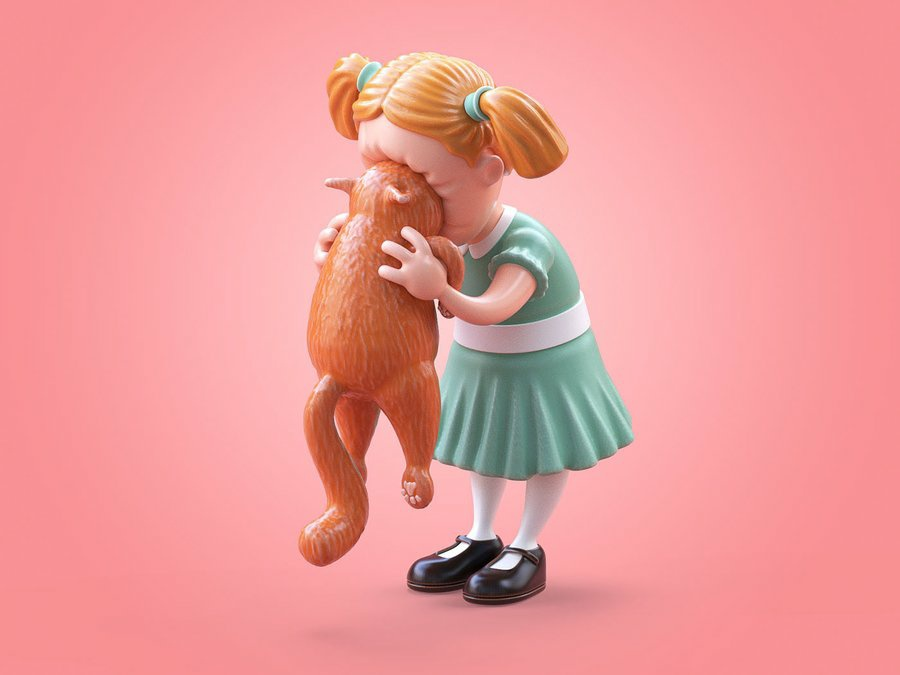
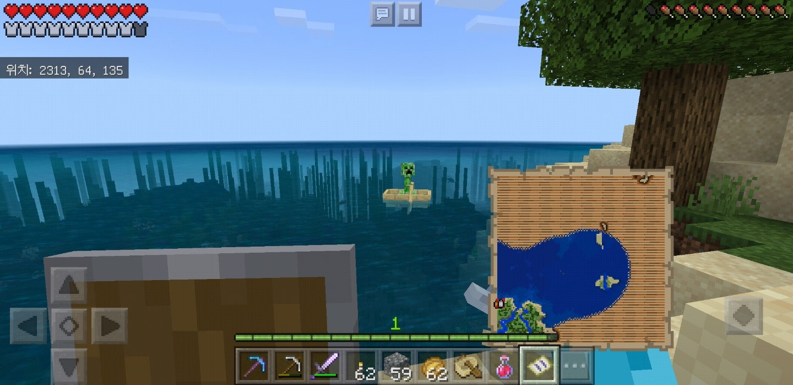
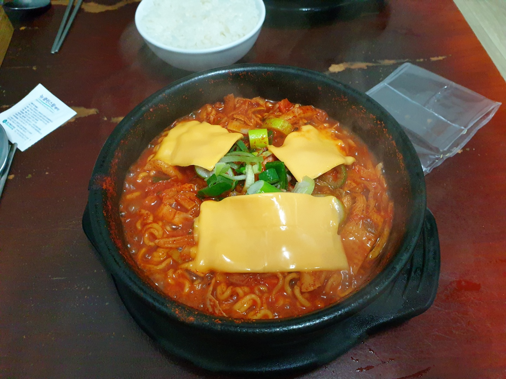

|  |  |  |
| 고양이를 좋아한다. 동물은 모두 좋아하지만 고양이는 정말 빠질 수 밖에 없는 것 같다. 하지만 너무 슬프게도 고양이 알러지가 있어서 오랜시간 함께할 수 없지만 너무 좋아한다. 힘들때 고양이를 보면 기분이 좋아진다. | 요즘들어 마크가 재미있는것 같다. 친구 두명과 함께 하고있는데, 집도 열심히 짓고 땅도 열심히 판다. 단순노동이라 아무 생각없이 하고싶을때 들어가서 땅파고 집짓는다. | 매운음식을 좋아한다. 엄청 잘 먹는 편은 아니지만 주기적으로 계속해서 먹게되는것 같다. 이 사진은 고등학교때부터 단골로 가고있는 매운라면집인데 주인 이모님이 얼굴을 기억해 가면 주문하지 않아도 만들어 주시는 재미있는 곳이다. |